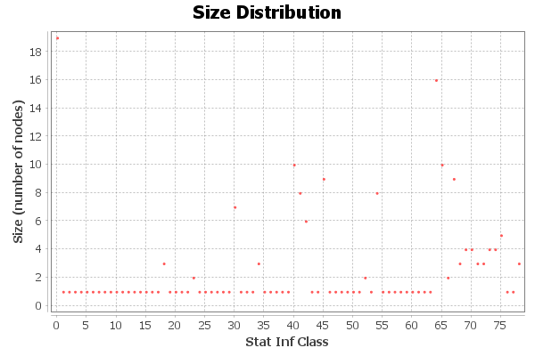

Statistical Inference Report
Results:
Description Length: 3235,057
Number of Communities: 79

Algorithm:
Statistical inference of assortative community structures
Lizhi Zhang, Tiago P. Peixoto
Phys. Rev. Research 2 043271 (2020)
https://dx.doi.org/10.1103/PhysRevResearch.2.043271
Bayesian stochastic blockmodeling
Tiago P. Peixoto
Chapter in “Advances in Network Clustering and Blockmodeling,” edited by
P. Doreian, V. Batagelj, A. Ferligoj (Wiley, 2019)
https://dx.doi.org/10.1002/9781119483298.ch11